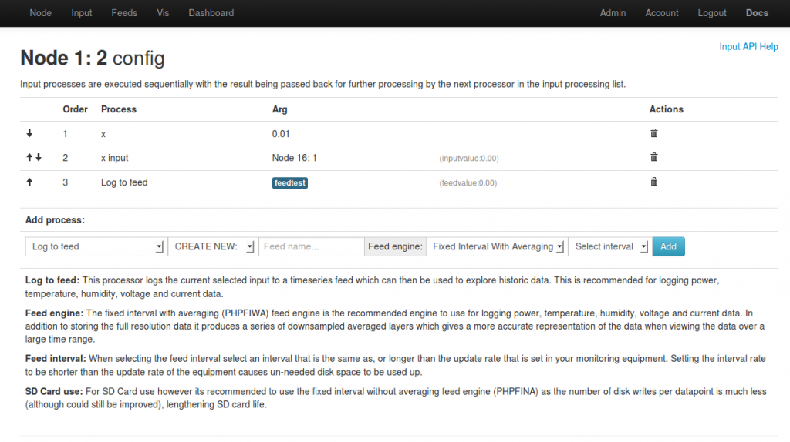
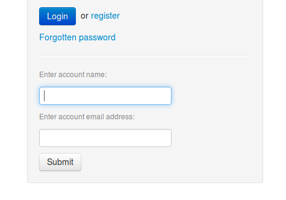
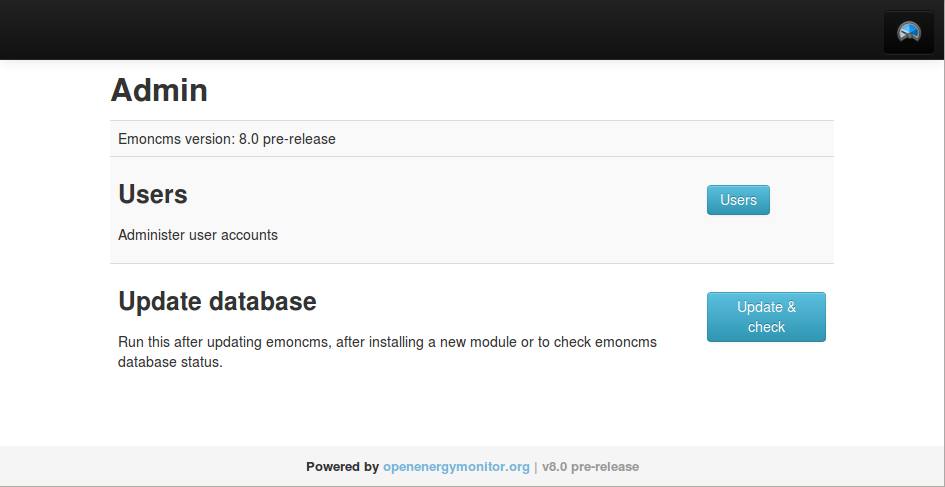

I'm working on a couple of new features for emoncms, there's still a fair way to go but I thought Id share where I've got to so far.
Nodes
{kind=link}
A new interface designed around rfm12b based nodes allowing for decoding of packets that contain different datatypes: integers, longs implemented so far, doubles unsigned int, long etc would be great too.
This is needed to send total watt hours from an emontx to emoncms as the maximum value that can be sent with integer datatypes is -32,768 to 32,767 enough for a couple of days if your sending watt hours which would be the resolution that would be best for home electric. Sending total watt hours as a long would allow -2,147,483,648 to 2,147,483,647 which is enough for 650 years at 3300 kWh per year. This also applies to total pulse count in pulse counting applications
Through the nodes interface you can either select pre defined decoders that work with the standard OEM emontx, emonth firmware/sketches which automatically apply all the right datatypes, scaling, units, input names, recommended feed intervals or create your own custom decoders, this works in a similar way to the packetgen module and could potentially merge with it to make one module that both receives and sends packets via the struct definition approach used with rfm12b.
Input config

A rework of the input processing config interface both to make better use of javascript and to provide more information on what each input process does, so integrating the input processing documentation in the input processing interface. There is also the option to create feeds in the different feed engines although I think this would be disabled as default so as not to over complicate with options, possible to enable if you want more advanced functionality.
I want to make this step easier to get started with so that there is information on the input config page on how to configure the input if its power, temperature or a pulse count.
Improved feed engine
- Port of timestore to PHP so that installation is easier on all platforms and possible on Windows which was a problem with the last version.
- Plus an improvement to the way the timestore averaging is calculated so that the averaging is aligned to the actual minute/hour/day rather than the start time of the feed. This will make creating visualizations, exports, analysis, that need to be aligned exactly to these intervals much easier, maybe it could help with the multi rate billing feature idea being discussed here: http://openenergymonitor.org/emon/node/2499
- There seems to be a stability problem with the original timestore when under heavy load, it keeps locking up. The PHP timestore port appears to be stable with no locking and its a bit faster too reaching ~5000 posts per second on my machine vs 3636 post per second with the original timestore. This is probably because it doesn't have the overhead of the webservice and encryption that timestore comes with. But then the port is in PHP while the original Timestore is in C. That said by now I've realised that the language isnt really the determining factor for performance in feed storage, the limiting factor is disk IO speed and the potential for improvement going forward from here is by introducing buffering of writes and in memory caching.
Password reset
There's now the much needed password reset feature:

There are a couple of other features Id like to add in the next release:
- A data export interface for exporting csv data at requested intervals and over a selected time range.
- A pre configured dashboard interface for home energy monitoring and solar pv monitoring that works well when viewed on a mobile.
- Id like to look at how it could be possible to make redis optional so as to simplify installation on windows.
All the code for what you can see in the screenshots above plus the php timestore based engines is in the rework development branch here https://github.com/emoncms/emoncms/tree/rework
Re: Emoncms development
Trystan
Some really good looking changes - looks like I need to make the jump to V7 sooner rather than later!
Can I make a couple of suggestions for making emonCMS more user friendly:
1. Some sort of simple backup/restore option that can be accessed from the web interface. At the moment I am taking SD card images and dropping the contents of the key directories to my PC's hard drive with FileZilla every now and again. If at all possible it would be good to have a USB flash drive plugged into a RPi port as a target for the backup/restore.
2. Syncing between a local emonCMS install and remote emoncms.org to save needing to set up inputs/feeds etc twice. It would be good if this could be set up with sync direction and automatic or manual options - that way you can play with one version and if all goes well then choose to replicate the changes (or even roll them back by syncing from the untouched version).
Keep up the good work - and thanks to everyone else that is working hard on emonCMS
Gary
Re: Emoncms development
This looks great, especially the ability to define the node as a complete unit, rather than working at the input level. I think that will be a lot more intuitive for less advanced users.
If you set up a node, does this just create the underlying input processing / feeds in one shot? (i.e. allowing the input processing to be tweaked if desired)
@GJPickard - this wouldn't help with syncing installations, but couldn't you use a SQL dump of your local database to back things up?
Re: Emoncms development
Gary: I would wait to upgrade and skip to v8 (wish I had choosen smaller version increments at the start)
A backup/restore feature that works like you describe would be nice I agree!
Schism: The node implementation of packed decoding and applying of a scale factor is completely separate from the inputs/input processing implementation, but Im thinking that as it develops there may be some merging of interfaces when creating feeds and so on. Im also thinking that it might be nice to transfer some of the node interface features to inputs such as the units and possibly the scaling too.
To backup you also need the feed data files which are separate from mysql. There is an export implementation at the moment its just not that easy to use and it requires the use of a terminal script.
Re: Emoncms development
Trystan, with a new version imminent, perhaps you may consider including the version number in the emoncms page footer so users know what version they have installed. This has been raised many times before, and could help when forum members encounter problems.
Plan B could be to add a txt file to the emoncms folder containing the version number, and users could simply;
$ cat version
to get the info.
Re: Emoncms development
Great improvements ! In particular the data export interface that is a must feature according to me.
I made some suggestion during the last weeks. Did you read this one ? My purpose is to make my students be able to work on EmonCMS with my feeds without making them be able to delete my feeds. To implement that feature, I could be necessary to add a column in the user table to define the user whom feeds can be read. Not sure, it is the best way to do it. Let me know.
I have some other suggestions regarding the input processing.
For the moment, I do this complex calculation directly into the Tx sketch, but it's not always possible when the inputs come form different nodes So if you can add these two feature in the V8 or in the next release ...
As I planned to install EmonCMS on several servers in the coming weeks, I would like to know whether the V8 will be available soon. Do you have any rough idea of the release date ?
Regards,
eric
Re: Emoncms development
I think here's a workaround:
input5 - input4 -> log to feed "dummy"
input2 x input3 + input1 / "dummy" feed -> log to feed "what you want"
This records a useless feed, but I believe it should work.
I don't think you can do that right now, but I believe it is easy to implement.
I've been working on another feature, that was never finished and integrated, and I needed the possibility to stop the processing by letting a processing function return NULL:
https://github.com/Jerome-github/emoncms_emoncms/commit/e27251563c024159...
You (or anyone) could do this, and add a test function like "greater_than()" that would check the input value and return either the input value itself or NULL, with the threshold value as argument. Same for "lower_than()". And two other functions time_greater_than() and time_lower_than() (beware of timezones !). Looks easy.
I haven't been checking recently but last time I checked, the function list in the processing definition GUI in the emoncms page was kind of a mess. If more are to be added, it may be worth considering sorting the functions. Like unary, binary, loggers/non loggers, arithmetic +-*/, comparators, accumulators, etc. Could be worth opening an issue on Github to discuss the categories before implementing.
Re: Emoncms development
Eric - I need to log pulses to different feeds depending on the time of day too. This way I will separate out my gas consumption for space heating from DHW; I'll post a topic when I get this working.
There are a few 'missing' processes I think, and/or ones which could do with being rebranded / explained at more length. I had to dig into the code to understand that "kWh to kWh/d" is a generic "log the increase of any accumulator to a daily feed", very handy for pulses for water or gas. (It's effortless to understand if you look at the code, but this shouldn't be a requirement really)
Trystan - how do you decide on versioning and deploying changes to emoncms.org ? It's not clear from github quite what's going on, with changes committed onto master that don't correspond with any sort of changelog (just commit messages).
I'm asking because when I do come up with a process to selectively log during specific hours of the day, I'd hope to be able to mirror that on emoncms.org as well as a local install. Does that mean making a pull request against a future version 9? Not quite clear how you're working, but I definitely want to make some contributions.
Re: Emoncms development
Thanks for improvements! Any plan on https (SSL/TLS)connection?
Re: Emoncms development
Hi,
Jerome, the workaround you described with the dummy feed is not possible. Maybe I'm wrong (I hope so !) but the processing " / feed x" is not available. (only " / input x " is possible). Anyway, for physical purposes, the brackets and the 1/x processing should be available.
I would be glad to take part into the discussion about how to implement the new processing list but I don't know how to handle issues on github. If someone can start the process, I will commit myself to it.
Eric
Re: Emoncms development
Paul, good idea on showing the version number, I've added a $emoncms_version variable to index.php this then gets displayed in the theme footer and on the admin page:

Re: Emoncms development
Granted. One limitation here, for the brackets, is the fact that a processing function, by design of the GUI, can only have one parameter, which is annoying for other use cases.
Create a Github account, then you can comment / open issues here:
https://github.com/emoncms/emoncms/issues
Re: Emoncms development
Eric, Not sure about release date, I would say on the 1-2 weeks scale for clean installs, longer for a full release that can be upgraded too, it all depends on making sure that the feed engine is stable enough.
Schism: At the moment there's no change log, just the github commit history, I usually branch or/and create a new version when there is a large enough change to the code that needs thorough testing and may present a risk for people if they routinely pull the latest changes from the master branch. Making the development process clearer: versioning, what's being worked on next is something Id definitely like to improve. Part of that I hope is this forum thread.
Re: Emoncms development
So Im working this morning on the new (Fixed Interval With Averaging - FIWA) feed engine implementation. The main difference compared to the existing timestore implementation is that averages are aligned to actual UNIX time hours, minutes and days rather than hours, minutes and days from the start time of the feed which may have been for example: 6:30am on its first day meaning that all subsequent averages are aligned to this start time.
The averaged layer feature is useful as it makes fetching data at wide timescales both fast and most importantly representative of the underlying data.
Lets say we want to create a graph of a years temperature data, we probably dont want more than around 800 to 1000 datapoints to create our graph as above that we may be getting close to the pixel width of the graph/display.
If the temperature data was recorded every 10s there are 3153600 temperature datapoints in that year, pulling all those datapoints into the browser would be very slow. If we want 1000 datapoints then one approach is to pull out a datapoint every 3153 datapoints this is what the mysql (variable interval no averaging), phptimeseries (variable interval no averaging) and phpfina engines do (fina - fixed interval no averaging).
The other approach is to calculate the average of those 3153 datapoints and so return data that is representative of all those 3153 datapoints not just a random datapoint out of every 3153. Doing this on the fly would also likely be very slow as youd need to load 3153600 datapoints into memory and then calculate 1000x 3153 datapoint averages.
So the timestore approach is to pre-compute averaged layers so that we dont have to do all the averaging work every time we want to see a graph.
Up to this point timestore (as used in emoncms) has had its decimation set too: 20, 6, 6, 4, 7.
So layer 1 is an average of 20 datapoints from layer 0, layer 2 is an average of 6 datapoints of layer 1 and so on.
At the time when I first added timestore to emoncms I didnt look into what levels of decimation/averaging would be most appropriate.
If your logging at 5 seconds: Layer1: 20 x 5 = 100s, Layer2: 20 x 6 x 5 = 10 mins, Layer3: 20 x 6 x 6 x 5 = 1 hour, Layer4: 20 x 6 x 6 x 4 x 5 = 4 hours, Layer5: 20 x 6 x 6 x 4 x 7 x 5 = 28 hours
Im thinking that rather than fix the decimation for all base post rates it should instead be fixed to provide daily and hourly averages at a minimum because these are useful analysis/export time scales.
If we're logging at 5 seconds then the decimation level for an hour is 720 (3600/5), the next step if daily is 24. 720 is a large decimation step size and will probably create slow graph load times if your trying to view graphs whose time between datapoints is just less than an hour.
If we add another layer with minute averages things improve quite a bit so:
This seems to provide pretty quick graph load times on my machine <10ms, but then its not under heavy load and its got an SSD.
A 60x step is still quite large, it means that at most on the fly averaging will be performed on 60000 datapoints to produce 1000.
Every layer that is added adds an additional file open, write, close when posting but then it also reduces the number of reads needed when posting for the generation of averages, then again there is scope for changing that with an improved post implementation.
It all gets quite complex.
So the development question I'm grappling with is what is the ideal number of averaged layers and what should the decimation/average step between layers be.
Latest commit: https://github.com/emoncms/emoncms/commit/1f6a1e7f81b2096e81ba668eb0a5ae...
Re: Emoncms development
A note of interest for feed engine choice on SD cards:
Because SD Cards need the number of writes per datapoint to be as low as possible in order to preserve lifespan, the best feed engine would be one without averaging as every averaged layer adds at least 1 additional open, write, close per post. The number of writes could also be reduced by potentially using php's filesize function rather than storing the number of datapoint in the feed in a meta file as is currently done in timestore and I've copied in the php ports and adaptations so far, I'm not sure if there are any caveats to that approach though. Interested to hear anyones thoughts on all of this.
Re: Emoncms development
This started off as a couple of points ;)
- Version Number - fantastic to see this, But it needs to be carried through to all modules, so that from one place you can see what modules are installed and what version of code they are all at.
It would also be good to have as a line in the Arduino scripts (recognising it won't be reported in EmonCMS but at least it would help in support).
It would be good if a request for this information was added to the blank forum post i.e. top of this page http://openenergymonitor.org/emon/node/add/forum/0 , so that it was included in the initial question, rather than an a first response back.
- Averaging - if we mean mean, can we call it mean?
- Support Schism's comment about documentation of what the processes are doing. It needs to be easier to understand what processes are actually doing.
-Timestore decimation/averaging, I might have got the wrong end of the stick as I haven't managed to install timestore on my dev environment. It would be good to be able to get mean values out emoncms as a feed.
-Timestore - struggle to see value of 28 hour "average"
-Timestore - can see value of 4 hour "average" e.g evenings energy use
(e.g. Nodered controlled LED light colour based on current power / gas use in comparison to evenings mean usage over past month)
I'm not convinced that the capabilities of the system should be constrained by unsuitability of utilising SD cards.
Openenergymonitor and EMonCMS have evolved past its original use case and what doesn't make as much sense for electricity monitoring might make more sense within an integrated energy/house/hive/weather monitoring system.
Re: Emoncms development
ukmoose, Il get back to you on the version numbers, Il get this feed engine work done first.
Yes mean values is the output, you can request a mean of any interval that is an integer multiple of the post rate, you can do this on timestore now, you will also be able to do this on the new engines.
Yes agree that system should not be constrained by SD cards, i was just making the point that when selecting a feed engine to use on particular hardware that one may choose one over the other.
Re: Emoncms development
I've carried out a little benchmarking in order to shed some more light on the question of the choice of layer intervals, i.e how many datapoints the arithmetic mean average should be calculated over when generating a downsampled layer.
Given that the feed engines are fixed interval the benchmark needs to post to enough feeds so that a post to a particular feed doesnt happen more quickly than its fixed post rate. So if our feeds are set to 5s post intervals and the post takes 0.00018 seconds to complete then we would need to post to 5 / 0.000183 just over 27000 feeds in that 5 seconds so that we dont post to any one feed more quickly than once every 5 seconds.
All benchmarks where carried out with a four core machine with the CPU fixed to 2GHz, 8GB Mem and an SSD
PHPFiwa engine (fixed interval with averaging)
Feed layer intervals: 1,60,3600,86400s
Posting 20000 took around 3.6s = 0.00018 seconds per post ~ 5555 posts per second
adjusting post number to 6000 time taken is now 0.000171 seconds per post 5848 posts per second
Feed layer intervals: 5,60,3600,86400s
Posting 30000 took ~ 5.5s = 0.000183 seconds per post ~ (5454 posts/s)
Adjusting the layer intervals to 5,60,600,3600s
Posting 30000 still took ~ 5.5-5.6s = 0.000187 seconds per post (5347 posts/s)
Adjusting the layer intervals to 10,60,600,3600s
Posting 55555 took ~ 10.5s = 0.000189 seconds per post (5291 posts/s)
Removing a layer: 5,60,3600s
Posting 35000 takes 5.6s = 0.000160 seconds per post (6250 posts/s)
Removing another layer: 5,60s
Posting 45000 takes 5.8s = 0.000129 seconds per post (7752 posts/s)
Removing another layer: 5 (only one layer equivalent to PHPFina engine, Fixed interval no averaging)
Posting 460000 takes 5.5s = 0.000092 seconds per post, (10870 posts/s)
PHPFina (Fixed interval no averaging)
Interval 5
Posting 100000 takes ~9.4s = 0.000094 seconds per post (10638 posts/s)
Interval 5 using filesize instead of writing the npoints to disk
Posting 100000 takes ~10s = 0.000100 seconds per post (10000 posts/s)
PHPTimestore
Posting 30000 takes 6.5s ~ 0.000217 seconds per post (4615 posts/s)
Posting 25000 takes 5.1 ~ 0.000204 seconds per post(4902 posts/s)
Timestore
Although a single post can take 0.000275 seconds (3636 posts/s), testing again today I could not get it to run continuously at a stable post rate at anything much faster than 310 posts per second 0.00323 seconds per post. The emoncms.org server has also reached a similar post rate and its seeing the same unstable slow down effect.
Conclusion
It looks like the exact choice of the number of datapoints to calculate the mean of per layer in the range tested does not have a really significant difference on post rate. Removing layers gives us a more substantial post rate improvement as we would expect.
Re: Emoncms development
I've started the process of moving emoncms.org over to the php port of timestore, so far the load stability / feed post processing time has improved significantly. If anyone see's anything amiss with their feeds please let me know.
On the question of what the ideal number of layers and what the interval's of each layer should be, I'm leaning towards the following standard configuration:
Feed with 5s, 10s, 15s, 20s or 30s fixed interval post rate
- Layer 0: 5s, 10s, 15s, 20s or 30s
- Layer 1: 60s
- Layer 2: 600s
- Layer 3: 3600s
Feed with 60s fixed interval post rate
- Layer 0: 60s
- Layer 1: 600s
- Layer 2: 3600s
Feed with 2 or 5min fixed interval post rate
- Layer 0: 120s or 300s
- Layer 1: 600s
- Layer 2: 3600s
Feed with 10,20,30 min fixed interval post rate
- Layer 0: 600s, 1200s or 1800s
- Layer 1: 3600s
Then maybe cap the maximum fixed interval post rate at 1 hour.
If a particular use case required a longer post interval the phptimeseries engine could be used which is a variable interval engine in that you can post at any interval. A variable interval engine is also useful for when the application only requires an entry sporadically i.e in response to a state change such as counting the number of times the internet goes offline on a basestation.
By missing out a daily mean layer any request for daily mean's can be generated from the hourly layer, the daily mean for any timezone can then easily be requested.
The request times for the above are all around 9-24ms with a feed that has around 2 and a bit years of data in it. A point to note is the memory use per request, at the moment if you had 10 years of data and you zoomed out to see the full range with the 1000 datapoints needed for the graph being generated from the hour layer, this would require an averaging of 24*365*10 = 87600 datapoints.
The current implementation of get_data reads the datapoints into an array which uses a fair bit of memory:
2300dp 1280kb (1.4ms)
5000dp 1792kb (2.7ms)
10000dp 2304kb (4.8ms)
15000dp 3072kb (8.3ms)
20000dp 4096kb (10.6ms)
(Times are php get_data function execution time vs the 9-24ms time which is the browser request time)
But I think it shouldn't be too hard to change the implementation to read in blocks to reduce memory or add another layer if the calculation time becomes too slow. Adding another layer could be added at a later date when the feed starts to reach + 5 years of data.
Re: Emoncms development
This sounds good. The question that remains in my mind is how you'd view a bar graph of the average of a feed (i.e. display a deeper layer of the feed than the raw data). This is a solid solution to viewing, say, daily average temps. I suspect this isn't currently supported in the UI?
If a new layer is added at a later date, how do you back-populate that interval for the previous X years? Some kind of offline process? It might be worth adding layers down to the day just because you get a 24x reduction in datapoints and it's also a common (perhaps even the most common?) interval that people may want to export for use in a variety of cases. However, if it's no big deal, no need to worry just now.
Re: Emoncms development
Thanks Schism, There's a daily average vis called timestoredaily but that's as much as there is so far.
There doesn't appear to be a problem with calculation time on 24 hours from the 1 hour layer yet and its a convenient way of getting around the timezone issue, but yes would be worth keeping an eye on it. Adding a new layer to existing data would be a background process, processed in a queue if there was a lot of feeds to convert.
Re: Emoncms development
Hmm, when I try timestoredaily for our internal temperature feed I get 0.35 to 0.4 per day (it's cold, but not that cold!) so I assumed it did something else (feed 33211 if you want to give it a try).
The nice thing about open source is that everyone can try to scratch their own itch, but I do think that it would be beneficial to have a little bit more structure in terms of who is working on what, timescales and so on. I don't want to suggest anything in particular but I think it could be an easier project to get into than it is - especially for people who are less comfortable about diving into the code, but for developers too.